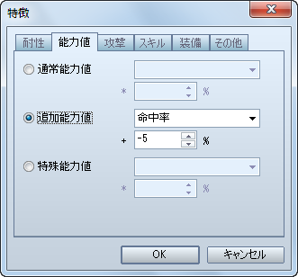
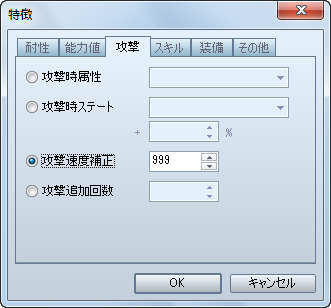
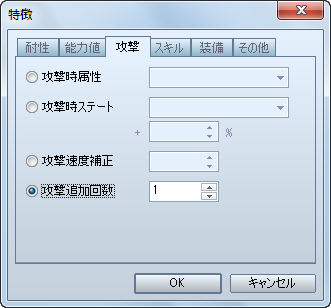

设置武器的命中率。
[武器]特性 - 能力 - 添加能力 - 物理命中几率

制作需要使用双手才能装备的武器。
[武器]特性 - 装备 - 禁用装备 - 盾牌
制作和敏捷无关，在每回合可以先制攻击的武器。
[武器]特性 - 攻击 - 修正攻击速度

装备武器后，在1次普通攻击中造成对象2次伤害。
[武器]特性 - 攻击 - 增加攻击次数

制作高机率发生必杀（在 VX 中称为[暴击]）的武器。
[武器]特性 - 能力 - 添加能力 - 必杀几率

制作通常攻击时以特定属性攻击的武器。
[武器]特性 - 攻击 - 攻击附加属性

制作攻击时给与对象附加特定状态的武器。
[武器]特性 - 攻击 - 攻击附加状态